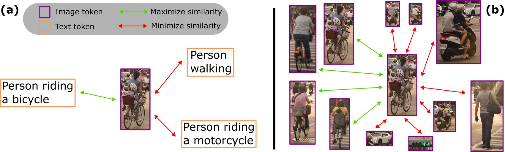
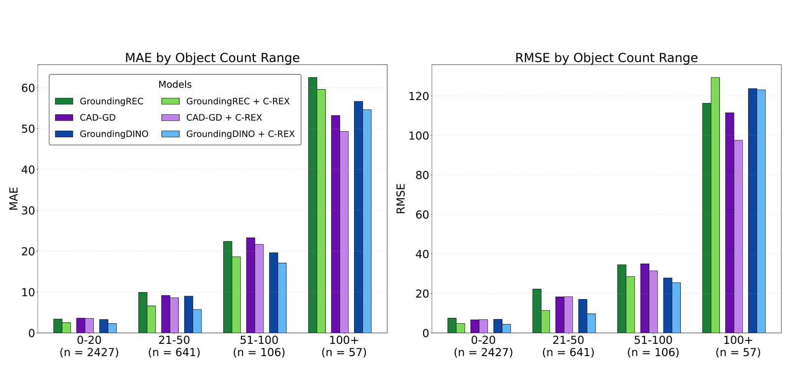

Abstract
Referring Expression Counting (REC) requires distinguishing visually similar objects described by fine-grained text cues. Existing methods tackle this via image-text contrastive learning of visual features which aims to distinguish visual features corresponding to positive and negative referring expressions. However, this strategy relies heavily on accurate image–text alignment and is constrained by the limited number of available negative expressions. We argue that these limitations can be avoided by performing contrastive learning entirely in the visual embedding space. To this end, we introduce C-REX, a simple but effective supervised contrastive learning framework that learns fine-grained visual representations by contrasting visual tokens within the same image. By shifting the negative samples from incorrect Referring Expressions to visual tokens from the image, C-REX vastly increases the number of potential negatives, providing richer and more stable supervision. This design leads to stronger fine-grained visual discrimination and better generalization across complex open-world counting settings. C-REX serves as a plug-in module that can be seamlessly applied to any existing REC model without architectural changes. We apply it in three different REC architectures and achieve state-of-the-art results improving by up to 28% in MAE and 24.5% in RMSE. Moreover, we show that our framework is versatile and general, and can be applied to other counting tasks like class-agnostic counting, improving the performance of existing models.
Method

C-REX replaces the image–text contrastive loss used by previous REC methods with a supervised contrastive objective computed entirely among the visual tokens of a single image. Predicted points are matched to the ground-truth points by bipartite matching: the matched tokens become the positive set, and every other token in the image becomes a negative, so the referring expression only conditions the visual backbone and never enters the contrastive objective itself. That turns a handful of text negatives into hundreds of visual ones, and because only positives act as anchors, unrelated negatives are pushed away from the positives without being pulled together. Every other counting loss is left unchanged, which is what makes C-REX a drop-in module for any existing REC architecture.
Qualitative Results
Each slide shows one referring expression. Every model is paired with its C-REX counterpart and colour-coded to match the count-range chart in the results below — the darker swatch is the baseline, the lighter one is the same model trained with C-REX. Image contrast is adjusted to make predictions easier to see.
Results
We integrate C-REX into GroundingREC, CAD-GD and a detection-based GroundingDINO baseline, with Swin-T and Swin-B backbones. It improves performance across models, backbones and metrics.
REC-8K
| Method | Validation set | Test set | |||||||||
|---|---|---|---|---|---|---|---|---|---|---|---|
| MAE ↓ | RMSE ↓ | Prec ↑ | Rec ↑ | F1 ↑ | MAE ↓ | RMSE ↓ | Prec ↑ | Rec ↑ | F1 ↑ | ||
| Swin-T | GrREC | 6.80 | 18.13 | 0.65 | 0.71 | 0.68 | 6.50 | 19.79 | 0.67 | 0.72 | 0.69 |
| + C-REX | 4.74 | 14.50 | 0.70 | 0.71 | 0.71 | 4.91 | 18.87 | 0.71 | 0.72 | 0.72 | |
| CAD-GD | 6.33 | 15.90 | 0.65 | 0.69 | 0.67 | 6.25 | 18.91 | 0.67 | 0.70 | 0.69 | |
| + C-REX | 5.98 | 14.84 | 0.66 | 0.70 | 0.68 | 5.97 | 17.37 | 0.67 | 0.73 | 0.70 | |
| CAD-GD† | 4.65 | 12.87 | 0.65 | 0.69 | 0.67 | 4.81 | 15.02 | 0.67 | 0.70 | 0.69 | |
| + C-REX | 4.70 | 13.78 | 0.66 | 0.70 | 0.68 | 4.61 | 14.71 | 0.67 | 0.73 | 0.70 | |
| GrDINO | 5.92 | 17.09 | 0.65 | 0.65 | 0.65 | 5.90 | 19.73 | 0.68 | 0.68 | 0.68 | |
| + C-REX | 4.26 | 12.89 | 0.75 | 0.72 | 0.73 | 4.38 | 17.93 | 0.76 | 0.74 | 0.75 | |
| Swin-B | GrREC | 5.66 | 15.24 | 0.66 | 0.77 | 0.71 | 5.42 | 18.47 | 0.71 | 0.69 | 0.70 |
| + C-REX | 4.57 | 14.22 | 0.72 | 0.72 | 0.72 | 4.58 | 18.07 | 0.74 | 0.72 | 0.73 | |
| CAD-GD | 5.31 | 13.68 | 0.70 | 0.73 | 0.72 | 5.36 | 16.14 | 0.73 | 0.73 | 0.73 | |
| + C-REX | 5.06 | 12.73 | 0.70 | 0.74 | 0.72 | 5.02 | 15.09 | 0.72 | 0.74 | 0.73 | |
| CAD-GD† | 4.40 | 12.20 | 0.70 | 0.73 | 0.72 | 4.58 | 13.81 | 0.73 | 0.73 | 0.73 | |
| + C-REX | 4.38 | 12.43 | 0.70 | 0.74 | 0.72 | 4.49 | 13.21 | 0.72 | 0.74 | 0.73 | |
| GrDINO | 4.58 | 14.64 | 0.70 | 0.76 | 0.73 | 4.64 | 17.58 | 0.72 | 0.76 | 0.74 | |
| + C-REX | 4.00 | 14.49 | 0.78 | 0.76 | 0.77 | 4.20 | 16.76 | 0.79 | 0.77 | 0.78 | |
Results on REC-8K. GrREC and GrDINO are GroundingREC and GroundingDINO. GroundingREC results come from the released models; CAD-GD is retrained on REC-8K with the authors’ public code, since no pre-trained models are available. CAD-GD† uses the alternative positive-detection strategy, selecting the top N tokens by density map estimate rather than a static threshold. Best result per backbone in bold; rows with C-REX are highlighted.
Performance across count ranges

Class-agnostic counting on FSC-147
| Method | Val set | Test set | ||
|---|---|---|---|---|
| MAE ↓ | RMSE ↓ | MAE ↓ | RMSE ↓ | |
| ZSC | 26.93 | 88.63 | 22.09 | 115.17 |
| CounTX | 17.10 | 65.61 | 15.88 | 106.29 |
| CountGD | 12.14 | 47.51 | 14.76 | 120.42 |
| DAVE | 15.48 | 52.57 | 14.90 | 103.42 |
| CAD-GD | 13.80 | 64.74 | 12.15 | 99.87 |
| + C-REX | 13.86 | 61.04 | 11.90 | 99.65 |
| GroundingDINO | 9.71 | 55.11 | 10.73 | 103.79 |
| + C-REX | 9.42 | 54.74 | 10.04 | 102.35 |
| GroundingREC | 10.06 | 58.62 | 10.12 | 107.19 |
| + C-REX | 9.66 | 54.07 | 12.46 | 104.53 |
Results on FSC-147 using only textual information (class names) to guide counting. For all models except CAD-GD and GroundingDINO we report results from their original papers. Best results in bold.
BibTeX
@inproceedings{triaridis2026crex,
title = {What is the Right Embedding Space for Contrastive Learning in
Referring Expression Counting?},
author = {Triaridis, Kostas and Kaliosis, Panagiotis and Nguyen, E-Ro and
Xu, Jingyi and Samaras, Dimitris and Le, Hieu},
booktitle = {European Conference on Computer Vision (ECCV)},
year = {2026}
}Acknowledgements
This research was partially supported by NSF grants IIS-2123920 and IIS-2212046, and by the CCI startup fund at UNC Charlotte.